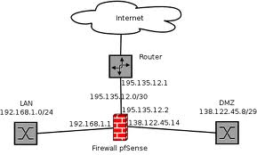

In informatica, nell'ambito delle reti di computer, un firewall (termine inglese dal significato originario di parete refrattaria, muro tagliafuoco, muro ignifugo; in italiano anche parafuoco o parafiamma) è un componente passivo di difesa perimetrale di una rete informatica, che può anche svolgere funzioni di collegamento tra due o più tronconi di rete, garantendo dunque una protezione in termini di sicurezza informatica della rete stessa. [1][2]
Di norma, la rete viene divisa in due sottoreti: una, detta esterna, comprende l'intera Internet mentre l'altra interna, detta LAN (Local Area Network), comprende una sezione più o meno grande di un insieme di computer host locali. In alcuni casi è possibile che nasca l'esigenza di creare una terza sottorete detta DMZ (o zona demilitarizzata) adatta a contenere quei sistemi che devono essere isolati dalla rete interna, ma che devono comunque essere protetti dal firewall ed essere raggiungibili dall'esterno (server pubblici)..
HOME